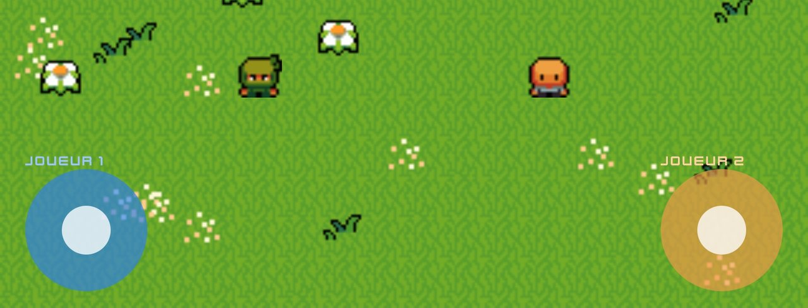

ℹ️ Requiere la versión 1266 de Yop2D o una más reciente (el último número de la versión, por ejemplo 1.0.1266). Si tu versión es anterior, actualiza Yop2D.
En una tablet, dos personas pueden jugar a la vez: cada jugador tiene su joystick y su personaje. Yop2D sigue cada dedo por separado (multitáctil), así que los dos personajes se mueven juntos, sin ningún nodo.
- un proyecto abierto en el editor (en horizontal, mejor en una tablet);
- dos personajes, por ejemplo player1 y player2 (dos objetos Imagen);
- un suelo o un fondo, como quieras.
Paso 1: dos personajes que caminan solos
- Selecciona player1 y toca ⚙ Comportamiento del objeto en el Inspector.
- Elige Personaje visto desde arriba (o Personaje de plataformas).
- En la línea Controles, deja Joystick.
- Haz lo mismo con player2.
Paso 2: dos joysticks
- Añade un objeto Joystick a la escena (categoría Interactivos) y ponlo abajo a la izquierda.
- Añade un segundo y ponlo abajo a la derecha.
- Dales nombres claros: joystick1 y joystick2 (la última parte explica por qué ayuda).
Paso 3: un objetivo para cada joystick
- Selecciona joystick1. En el Inspector, sección «Control Joystick», toca el botón «Objeto a mover» y elige player1.
- Selecciona joystick2 y elige player2 del mismo modo.
- Guarda y lanza el juego.
Pon un dedo en cada joystick: los dos personajes se mueven a la vez, cada uno con su joystick. Levanta un dedo y solo ese personaje se detiene.
Para ir más lejos: leer cada joystick en una fórmula
El primer joystick conserva sus fórmulas de siempre: joystick.x, joystick.y, joystick.force, joystick.angle, joystick.actif. Para los demás, ponle al joystick un nombre que empiece por «joy» y usa las mismas palabras tras el nombre: joystick2.x, joystick2.y, joystick2.force, joystick2.angle, joystick2.actif.
Por ejemplo, para mover con el segundo joystick un objeto que no es un personaje, usa «Empujar objeto» conectado a «Cada fotograma» con =joystick2.x * 5 y =joystick2.y * 5.

.x y .y: dan la dirección empujada (entre -1 y 1).Un botón de salto para cada jugador
Los personajes de plataformas también pueden tener su propio botón de salto: en ⚙ Comportamiento del objeto, elige un botón distinto para cada personaje en Botón para saltar. El multitáctil permite que los dos jugadores pulsen a la vez.
La plantilla «Dos jugadores» muestra todo esto listo para usar: dos ninjas, dos joysticks y ningún nodo.
Si no funciona
- Los dos personajes siguen el mismo joystick: comprueba que cada joystick tiene su propio objetivo en «Objeto a mover».
- Un personaje no se mueve: su comportamiento debe ser Personaje visto desde arriba o Personaje de plataformas, con Controles: Joystick.
- Un joystick no reacciona: comprueba que es visible y no está tapado por otro objeto.
- Solo funciona un joystick: comprueba que usas la versión 1266 o más reciente de Yop2D.